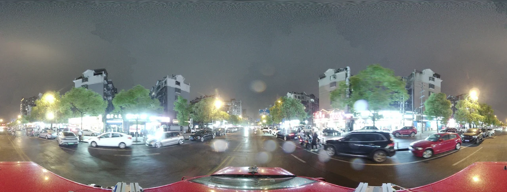
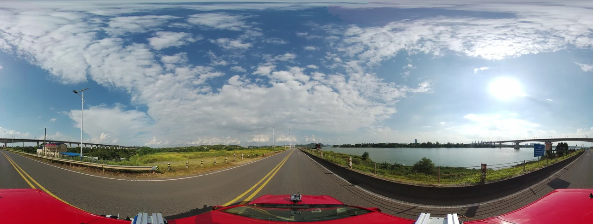
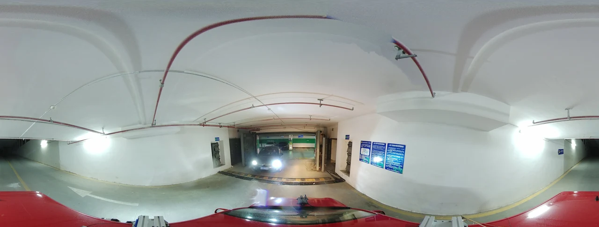
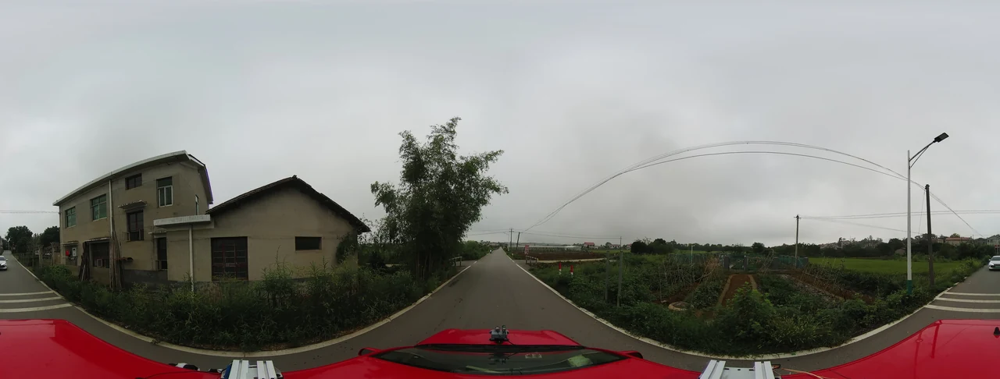
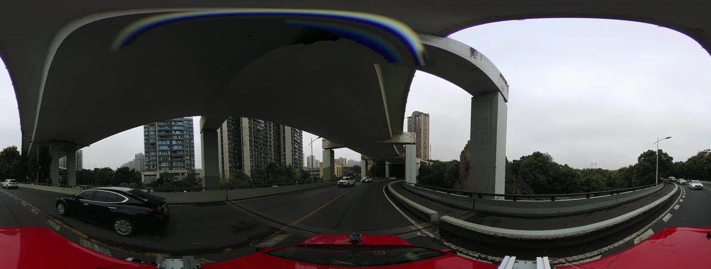

01
Spherical imaging
A continuous surrounding observation captured at 5188 × 1979 pixels.
360° × 136.70°horizontal × vertical FoV
3D Scene Understanding from
Spherical Observations in the Wild
Dataset in motion
Explore one continuous real-world sequence through its complete surrounding view—the native visual domain of Spheriverse and the starting point for its 3D perception tasks.
Dataset at a glance
Spheriverse combines high-quality spherical imagery with dense LiDAR observations and spatial annotations across geographically and visually diverse driving environments.
01
A continuous surrounding observation captured at 5188 × 1979 pixels.
02
High-density range observations provide reliable geometric support for 3D annotation.
03
Camera, LiDAR, and GNSS/INS streams are aligned within a unified acquisition platform.
Scene diversity
Traffic function, environmental context, spatial layout, illumination, and weather vary substantially across the collection.





Semantic annotations
The hierarchy preserves detailed real-world concepts while providing standardized category spaces for reproducible evaluation.
Unified benchmarks
More than 30 representative methods are evaluated under common protocols with overall and scene-wise analyses.
| Method | mIoU ↑ | GeoIoU ↑ |
|---|---|---|
| TPVFormer | 12.21 | 22.35 |
| SurroundOcc | 12.05 | 22.55 |
| OccDepth | 11.63 | 21.59 |
| MonoScene | 11.44 | 21.68 |
| OccDepth + DA | 11.42 | 21.97 |
| QuadricFormer | 11.09 | 20.76 |
| ProtoOcc + DA | 11.07 | 20.77 |
| ProtoOcc | 10.93 | 21.02 |
| CoTR | 9.72 | 19.23 |
| GaussianFormer | 9.16 | 18.04 |
| BEVFormer | 8.22 | 18.37 |
| SphereOcc | 13.91 | 24.65 |
| Method | mIoU ↑ |
|---|---|
| OneBEV | 22.66 |
| HDMapNet | 20.71 |
| PivotNet | 19.93 |
| SparseBEV | 19.62 |
| VectorMapNet | 19.38 |
| BEVFormer | 18.17 |
| PETRv2 | 18.16 |
| SeqBEV | 16.37 |
| MapTR | 15.83 |
| TPVFormer | 15.64 |
| Method | mAP ↑ | NDS ↑ |
|---|---|---|
| SparseBEV | 0.1689 | 0.1221 |
| PolarBEVDet | 0.1364 | 0.1086 |
| SOLOFusion | 0.1316 | 0.1017 |
| DETR3D | 0.1296 | 0.0996 |
| PR-BEV | 0.1178 | 0.0985 |
| CoIn3D | 0.1078 | 0.0939 |
| DenseBEV | 0.0941 | 0.0874 |
| BEVFormer | 0.0941 | 0.0806 |
| GeoBEV | 0.0654 | 0.0715 |
Reference model
A feed-forward occupancy framework coupling spherical geometry with semantic evidence to construct metric voxel representations.
Forms Cartesian–spherical voxel features by embedding sphere-aligned range–azimuth relations.
Uses RTZ-conditioned voxel queries to retrieve relevant evidence from source spherical image features.
Spatial statistics
Angular and radial partitions reveal strong spatial variation in class composition, reflecting the directional structure and long-range imbalance of real driving scenes.
Resources
The public links below are prepared as release placeholders and can be replaced when the paper, code, and data are available.
Citation
Citation information will be added when the manuscript is released.
TODO